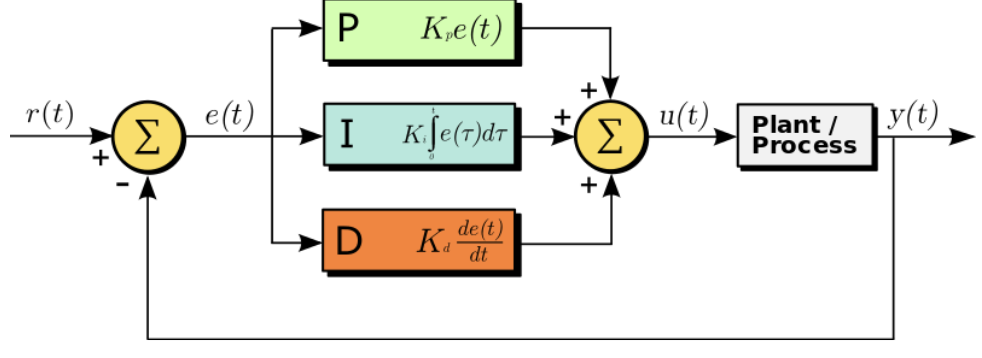
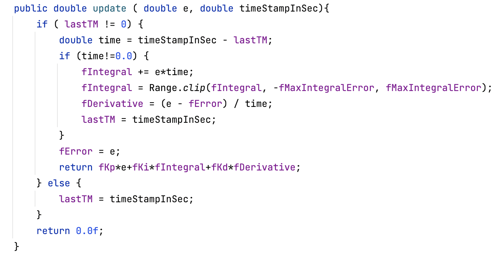

PID is integral to all the movements of our robot, making the autonomous consistent and precise. The most important aspect of this mechanism is guaranteeing consistent rpm on our motors, ensuring that the robot will always move with the same power, distance, and angle, regardless of the voltage of the battery, negating all inconsistencies.
A Proportional-Integral-Derivative controller is a control loop mechanism that calculates the error value, which is the difference between the setpoint (the desired value for the PV) and the process variable (a quantity used as a feedback), and adjusts according to the PID values, hence the name. Basically, it applies a responsive correction to a control function.
Here, e(t) is the calculated error value e(t)=r(t)-y(t) r(t)is the setpoint. y(t)is the process variable. u(t) is the control variable, adjusted by PID values.
P: Current; Proportional to the current value of the SP − PV error e(t); The bigger the error (target – current), the bigger the feedback force.
I: History; Accounts for past values of the SP − PV error and integrates them over time to produce the I term; The bigger the accumulative error, the bigger the feedback force.
D: Future; Best estimate of the future trend of the SP − PV error, based on its current rate of change; The faster the error reduces, the less feedback force should be.